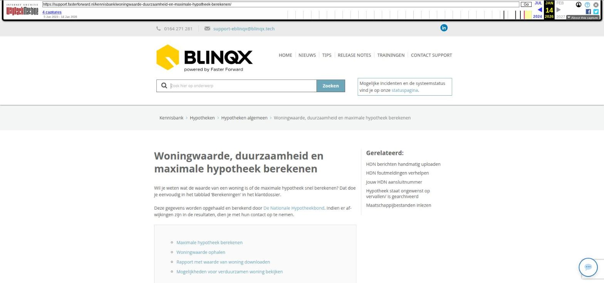

Woningwaarde, duurzaamheid en maximale hypotheek berekenen

Tekstinhoud
Woningwaarde, duurzaamheid en maximale hypotheek berekenen
Wil je weten wat de waarde van een woning is of de maximale hypotheek snel berekenen? Dat doe je eenvoudig in het tabblad 'Berekeningen' in het klantdossier.
Deze gegevens worden opgehaald en berekend door De Nationale Hypotheekbond. Indien er afwijkingen zijn in de resultaten, dien je met hun contact op te nemen.
Maximale hypotheek berekenen
Woningwaarde ophalen
Rapport met waarde van woning downloaden
Mogelijkheden voor verduurzamen woning bekijken
Maximale hypotheek berekenen
In het klantdossier onder het tabblad Berekeningen is het mogelijk om de maximale hypotheekberekening te maken. Hierbij worden de gegevens van de klant gevuld met de bekende gegevens die in het dossier ingevoerd zijn.
Woningwaarde ophalen
In het klantdossier wordt, indien mogelijk, de woningwaarde van de panden in het dossier getoond. Deze woningwaarde wordt getoond op de startpagina van het dossier en onder het tabblad Berekeningen. De woningwaarde zie je ook terug in de dossiersamenvatting en bij de panden in het tabblad partijen en objecten.
Onder het tabblad Berekeningen kan je de woningwaarde opnieuw ophalen door middel van het oranje verversicoon.
Wanneer het correspondentieadres een postbus of antwoordnummer is, óf er kan voor een regulier adres geen waarde opgehaald worden, is er geen melding zichtbaar.
Rapport met waarde van woning downloaden
Het is ook mogelijk om een woningwaarderapport te downloaden. Hiervoor heb je een inlog van PortefeuilligeSignalen nodig. Om het woningwaarde rapport te downloaden klik je op de knop 'Woningwaarde' onder het tabblad Berekeningen.
Als je geen gebruik maakt van PortefeuilleSignalen en je wilt toch een woningwaarde rapport ophalen dan kan je bij Hypotheekbond een demo-login aanvragen. Zonder een account is het niet meer mogelijk om het woningwaarde rapport bij hen op te vragen.
Mogelijkheden voor verduurzamen woning bekijken
Veel consumenten willen besparen op hun lasten voor gas, water en licht. Met het duurzaamheidsprofiel zie je globaal de mogelijkheden om de woning te verduurzamen.
Het rapport laat zien hoe de woning scoort in energieverbruik en hoe je het verbruik kunt verlagen. Dit kan bijvoorbeeld door: beter isoleren, slimmer verwarmen en zonnepanelen. Het rapport schat in hoeveel euro's het bespaart, wat de investering oplevert en wat het kost.
Klik onder het tabblad Berekeningen op de blauwe 'Duurzaamheidsprofiel' knop en download het rapport van de duurzaamheidsprofiel website.
Laatste update: 15 oktober 2025
Was deze informatie nuttig?
Ja Nee